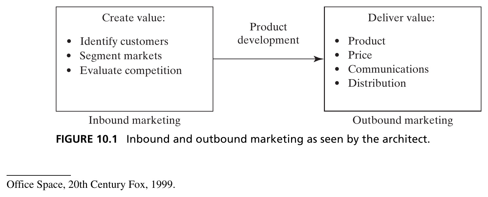
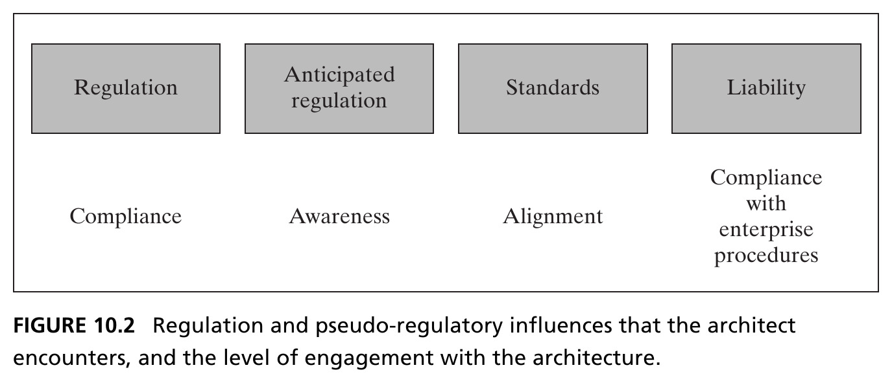
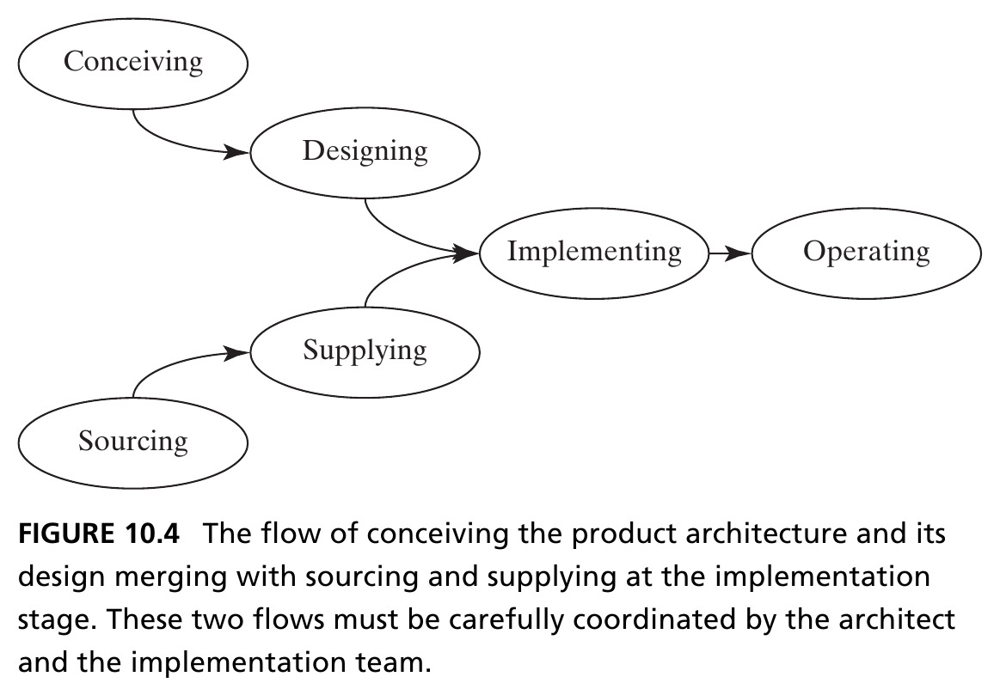
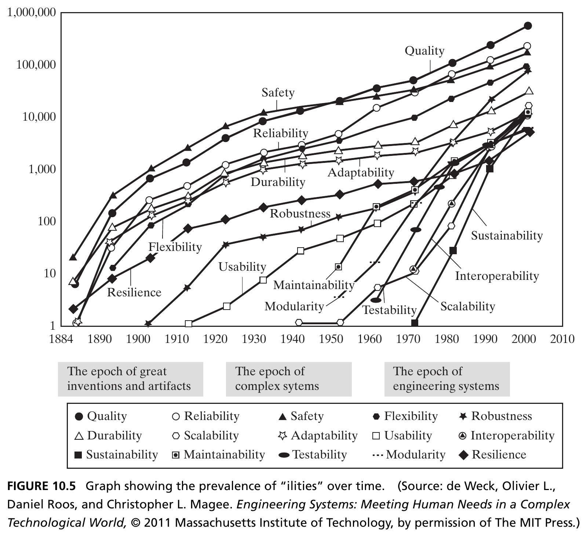
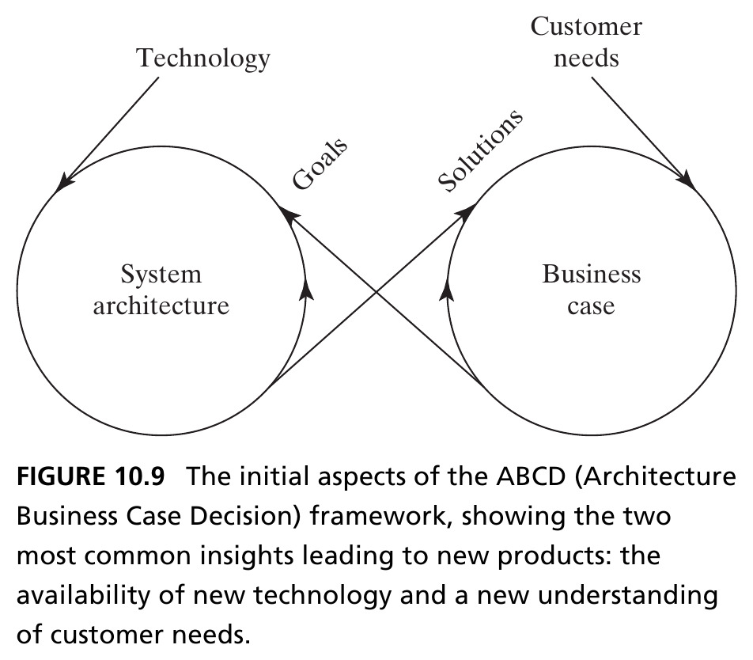
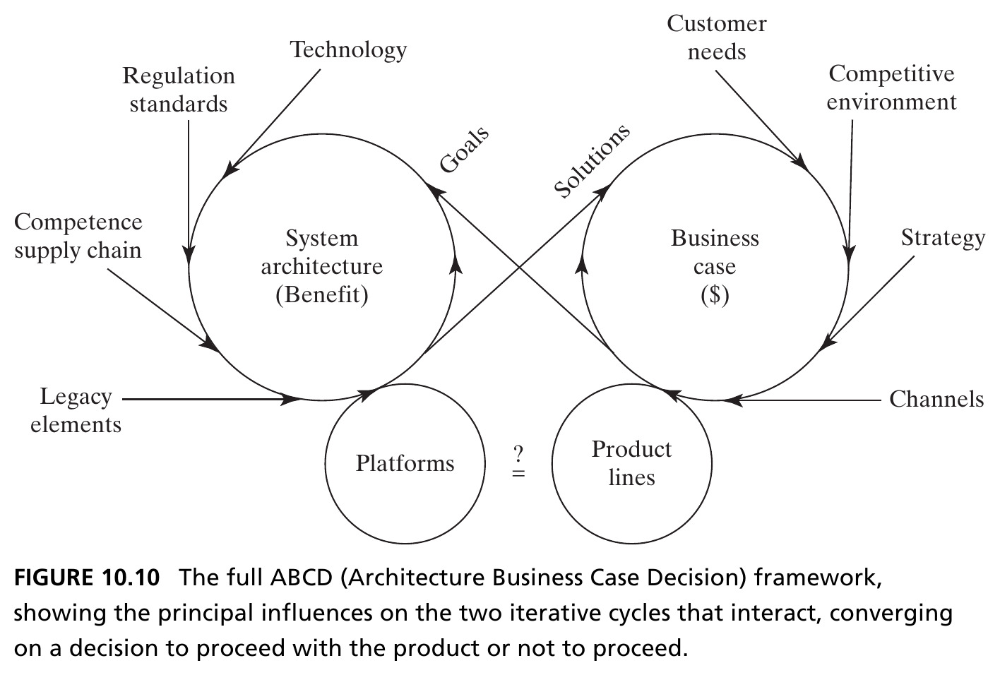
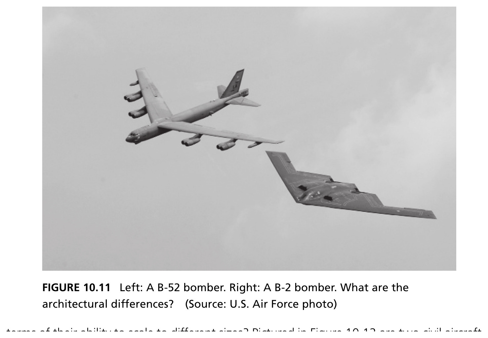
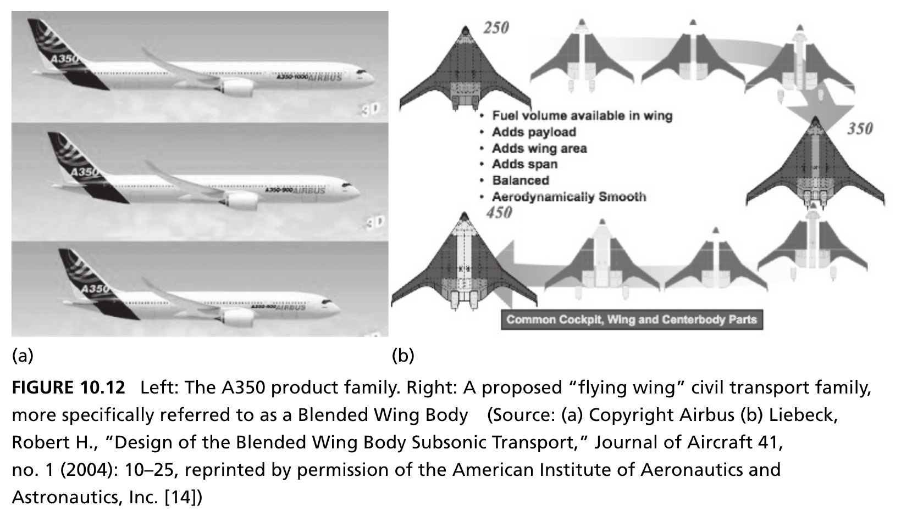
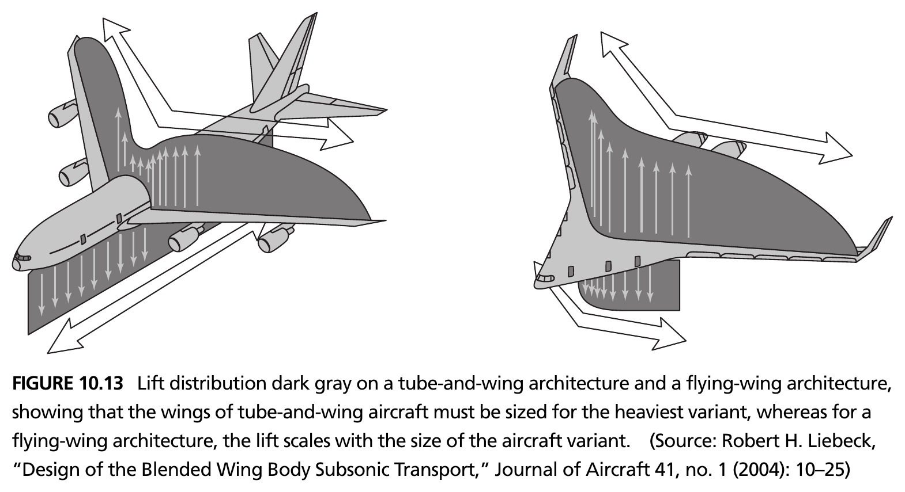

Systems Architecture · Chapter 10
Roadmap: the ABCD Product Case
This chapter surveys the principal upstream and downstream influences, then shows how they combine in an iterative decision framework: the ABCD Product Case.
| Architectural decision | Detailed design decision |
|---|---|
| Driven wheels on a car; tail or no tail on an aircraft; real-time or batch algorithm | Seat fabric or another local finish |
Architectural choices set the form–function mapping, performance envelope, major tradeoffs, and often cost. Their consequences can spread through the whole system, so they are expensive to change late.
Adapted from Crawley, Cameron & Selva (2016), Box 10.1.
“Strategy involves calculated gambles. If success were assured, strategy would be called investing in risk-free bonds!” (Crawley, Cameron & Selva, §10.2)
In many technology firms, the architecture has an enormous impact on corporate strategy, and vice versa.
IBM PC
Airbus A319 / A320 / A321
| Level | What it tells the architect | Example from the book |
|---|---|---|
| Shareholder annual report | Public long-term objectives, action programs, and resource priorities; says little about what is excluded | “Be the largest automotive OEM by units sold in 2018” |
| Executive | Which businesses the firm is in; where it invests selectively; what it excludes | BMW exits Formula 1 in 2009 and creates BMW i for small, efficient city vehicles |
| Business unit | How the unit segments its customers, which threats it mitigates, which opportunities it excludes | How BMW i segments customers and chooses its investments |
| Functional | How marketing, R&D, sourcing, and product development serve the corporate goals | “What must sourcing do if the firm wants to be first to market with technology?” |
Adapted from Crawley, Cameron & Selva (2016), §10.2. The architect must be intimately familiar with the business unit strategy and deeply engaged with the functional strategies.
| Function | Key strategy questions |
|---|---|
| Marketing | Where does the company compete (markets, segments, competitors, geography)? How does it compete (cost, quality, services, feature innovator or follower)? |
| R&D / Technology | How important is new technology? Will it be developed or acquired, at what level of investment, with what multiproduct planning? |
| Manufacturing / Sourcing | How important is low-cost manufacturing? Internal manufacturing or outsourcing? How will suppliers be integrated? |
| Product Development | How will new products be developed? Any platforming? Global or regional products? Internal, outsourced, or an alliance? |
From Crawley, Cameron & Selva (2016), §10.2.
At every level, strategic goals are often stated in corporate finance terms. The architect must translate them into product implications.
| Goal as stated | The architect’s question |
|---|---|
| 20% compound annual growth rate (CAGR) for a market entry in Asia | What product development timeline does this imply? |
| R&D at 3% of revenues | Is that enough to develop the lead variant of a product family? |
| Second and third variants | Will they help amortize the lead variant’s investment? What is the ROI of each variant compared with the platform as a whole? |
Quick check
At 20% CAGR, revenue doubles in about ln 2 / ln 1.2 ≈ 3.8 years. Can the product, its variants, and its supply chain be ready in time to carry that growth?
| Aspect | Strategy → architecture | Architecture → strategy |
|---|---|---|
| Mission and scope | Address the enterprise’s mission and stakeholder needs; respect the activities strategy excludes | The architecture can constrain the scope available to strategy; communicate that constraint |
| Enterprise goals | Meet revenue, margin, ROI, and growth goals; align with a market opportunity or defend against a threat; build on core competencies | Advocate for expanding competencies, or plan to go outside the enterprise |
| Resource allocation | Fit within the resource allocation guidelines | Know the decision process and defend the allocation |
| Initiatives and action plans | Leverage corporate initiatives and functional strategies | Enable new functional strategies, or communicate constraints that complicate them |
Condensed from Crawley, Cameron & Selva (2016), §10.2.

Inbound marketing creates value: identifying customers, segmenting markets, evaluating competition. Outbound marketing delivers value: product, price, communications, distribution. Product development is the bridge between them. Source: Crawley, Cameron & Selva (2016), Fig. 10.1.
| Interaction | What it means for the architect |
|---|---|
| Stakeholders and their needs | The architecture can satisfy some needs and place others out of reach |
| Segmentation, market size, penetration | Requirements must reflect a real customer community; estimated sales drive the business case; penetration timing affects how stable the architecture will be in the market |
| Competitors and competing products | Customers compare function and performance with competitors; estimate competitors’ systems as well as possible |
| Outbound marketing | Outbound marketing defines revenue, so the architecture must enable it; know the plans for product definition, communications, and distribution channels (which affect service) |
Condensed from Crawley, Cameron & Selva (2016), §10.3. Marketing knows what customers want; the architect determines whether and how it can be delivered.
Direct and indirect effects
Regulation affects architecture two ways: directly (mandatory backup cameras, medical device material rules) and indirectly, through downstream factors like manufacturing location, hiring rate, or addressable markets.

Four categories, each demanding a different level of engagement: regulation (compliance), anticipated regulation (awareness), standards (alignment), liability (compliance with enterprise procedures). Source: Crawley, Cameron & Selva (2016), Fig. 10.2.
The first step in complying with any regulation is to understand its intent.
| Intent | Example |
|---|---|
| Protect the consumer | Credit card bills must show the payback period if only the minimum is paid |
| Prevent workplace injury | OSHA ventilation and protection standards for toxic materials |
| Protect the environment | CAFE fleet-average standards for car manufacturers |
| Implement industrial policy | Tax credits for plug-in electric vehicles; implicit tariffs |
| Prevent dissemination of sensitive technology | ITAR limits on sharing munitions-related data with non-U.S. citizens |
How rigid is the limit?
Leading firms often exceed regulations because doing so adds customer value or marketing benefit. Where regulation pushes an industry toward a social good, firms engineer as close to the limit as possible. Intent helps predict which case applies.
Legal counsel
The architect
1. Will the technology be ready for infusion? 2. Will it actually create additional value for customers and stakeholders? 3. How will it be effectively transferred into the product or system?
| TRL | Evidence of readiness |
|---|---|
| 1 | Basic scientific principles observed and reported |
| 2 | Possible application or technology concept formulated |
| 3 | Analytical and experimental proof of a critical function |
| 4 | Components integrated and validated in a laboratory |
Early research and laboratory validation. Adapted from the U.S. Department of Defense scale in Crawley, Cameron & Selva (2016), Fig. 10.3.
| TRL | Evidence of readiness |
|---|---|
| 5 | Components validated with realistic support in a relevant environment |
| 6 | Representative system or subsystem prototype demonstrated in a relevant environment |
| 7 | Near-operational system prototype demonstrated in an operational environment |
Adapted from Crawley, Cameron & Selva (2016), Fig. 10.3.
| TRL | Evidence of readiness |
|---|---|
| 8 | Final system completed and qualified through test and demonstration |
| 9 | Final system proven in successful mission operations |
Adapted from Crawley, Cameron & Selva (2016), Fig. 10.3.
An inefficient market for technology
Many firms now acquire technology from suppliers, universities, government laboratories, and small companies. Those developers often don’t know the technology’s potential value, almost certainly don’t know the architect’s intended application, and rarely have the money and time to mature it. The architect must devise a mechanism for transfer.

Conceiving and designing merge with sourcing and supplying at the implementation stage: two flows that must be carefully coordinated by the architect and the implementation team. Source: Crawley, Cameron & Selva (2016), Fig. 10.4.
The key implementation decision for the architect is make or buy: will the product be implemented within the enterprise or at a supplier?
1. Competence. Is it within the enterprise’s core implementation competence, or one the firm wants to develop? 2. Capacity. Is there “space” in the implementation process to realize this product?
Benefits of early supplier involvement
Drawbacks
Once a supplier is slated to provide a component, that component becomes a hard boundary and will influence decomposition. Suppliers can define decomposition or defy decomposition.
| Phase | Air transport | Hybrid car | Refrigerator |
|---|---|---|---|
| Get Ready | Sell tickets; schedule aircraft and staff | Deliver, register, and bring car home | Deliver, install, and transfer ownership |
| Get Set | Check in travelers; load baggage and catering; plan flight | Fuel, start, adjust seats, load passengers | Cool down, set temperature, load food |
| Go: primary | Transport travelers | Transport people and cargo | Preserve food |
| Go: secondary | Feed and entertain travelers | Provide climate control, entertainment, navigation | Provide ice and cold water; freeze food |
Condensed examples from Crawley, Cameron & Selva (2016), Table 10.1. “Get Ready” may happen once; “Get Set” prepares each use.
| Phase | Air transport | Hybrid car | Refrigerator |
|---|---|---|---|
| Go: contingent | Notify travelers of delays and missed connections | Repair a flat tire; prevent a skid or low-speed damage | Permit easy spill cleanup |
| Go: emergency | Brace and evacuate through slides | Protect occupants in a crash | Prevent entrapment in an abandoned unit |
| Go: stand-alone | Move an aircraft without passengers | Start or operate selected functions without a driver inside | Not listed in the book’s table |
Condensed from Crawley, Cameron & Selva (2016), Table 10.1. The book also gives keeping food cold during a power outage as a stand-alone example in the surrounding text.
| Phase | Air transport | Hybrid car | Refrigerator |
|---|---|---|---|
| Get Unset | Deplane travelers; unload baggage | Unload passengers and baggage; park | Clean out food |
| Get Unready | Clean and store aircraft overnight | Clean and store car for an extended period | Uninstall and dispose |
| Fix | Routine maintenance and upgrades | Regular and event-driven maintenance | Event-driven maintenance and repair |
Condensed from Crawley, Cameron & Selva (2016), Table 10.1. Get Unset follows a use cycle; Get Unready prepares for longer storage or retirement.
Contingency operations
Off-normal, but recoverable without loss of primary function or personal/property damage. Performance may degrade gracefully: a spill in a refrigerator, a skid, a missed network packet. The architect builds in recovery provisions.
Emergency operations
Off-normal conditions beyond the planned recovery range. Protecting life and limiting property damage take priority over delivering the primary function. The architecture needs provisions for these conditions.
Stand-alone operations
Stand-alone operations: the system must operate without connection to its normal supporting systems. This is common during test, but sometimes also happens in the field (e.g., a refrigerator keeping food cold through a power outage).
Design for X (DfX) is a family of guidelines that brings downstream concerns into early architectural decisions.
| Guideline | Early question |
|---|---|
| Design for Manufacturing | Can the chosen form be made and assembled reliably? |
| Design to Cost | Can the concept meet its cost target across its lifecycle? |
| Design for Test | Where will tests observe and access critical behavior? |
| Design for Six Sigma | How will variation affect performance and quality? |
Examples from Crawley, Cameron & Selva (2016), §10.8. A circuit-board probe point is one concrete Design for Test provision.

15 “ilities” tracked by journal mentions since 1884 (log scale): quality and safety dominate early; sustainability, interoperability, and scalability are recent arrivals. Not every “ility” is architecturally distinguishing, and they are not independent of one another. Source: Crawley, Cameron & Selva (2016), Fig. 10.5, after de Weck, Roos & Magee (2011), © MIT Press.
Not every ility is architecturally distinguishing, and none always is
The ilities are not independent
Adapted from Crawley, Cameron & Selva (2016), Box 10.2.
Systems must evolve as needs and technology change. Put the most stable contracts at interfaces so internal elements can change without forcing every other element to change.
Adapted from Crawley, Cameron & Selva (2016), Box 10.3.
Best practice: explicitly set interfaces between slow- and fast-clockspeed components, on the presumption that unplanned evolution will occur on the fast side of the interface.
Platforming is the intentional sharing of parts and process across or within products.
The figure shows eight variants in GE Healthcare’s LOGIQ ultrasound family. Compare the range of products when considering opportunities for shared architecture and components. Source: Crawley, Cameron & Selva (2016), Fig. 10.6. Used with permission of GE Healthcare.
| Phase | Potential benefits |
|---|---|
| Conception | Faster variants; entry into niche markets; easier deployment of new technology through common interfaces; technology risk concentrated in fewer parts |
| Development | Shared engineering; less repeated testing and commissioning; shared test equipment; reusable or amended certifications |
Condensed from Crawley, Cameron & Selva (2016), Fig. 10.7. Benefits depend on actual sharing across variants.
| Phase | Potential benefits |
|---|---|
| Production | Shared tooling; learning-curve labor savings; scale economies; volume purchasing; lower safety stock; flexibility in variant output |
| Operations | Shared sustaining engineering and facilities; transferable operator training; purchasing and inventory savings; shared inspections and compliance work; flexibility in staffing |
Condensed from Crawley, Cameron & Selva (2016), Fig. 10.7. Evaluate benefits over the entire product family and lifecycle.
| Phase | Costs and drawbacks |
|---|---|
| Conception | Future variants must use shared parts; schedule and brand risk concentrate; variants may cannibalize sales; a sole supplier may raise prices |
| Development | Designing for several use cases and more flexible test equipment adds cost |
Condensed from Crawley, Cameron & Selva (2016), Fig. 10.8.
| Phase | Costs and drawbacks |
|---|---|
| Production | Lower-end variants may carry costly higher-end parts; configuration control and production capacity become harder to manage |
| Operations | A shared part can fail across many variants; performance may fall short of a unique optimized design |
Condensed from Crawley, Cameron & Selva (2016), Fig. 10.8.
Divergence. In the MIT Commonality Study, platform development cost up to 50% more than standalone development, yet many firms realized less sharing than they planned. Divergence is often set early: by long schedule offsets between variants, and by variant goals that don’t say where over-performance will be carried for the sake of common parts.

Architecture Business Case Decision: two iterative cycles. Technology feeds the architecture cycle and customer needs feed the business case cycle; the business case sets goals for the architecture, which returns solutions to the business case. Source: Crawley, Cameron & Selva (2016), Fig. 10.9.

External drivers now flow in on both sides: regulation, standards, competence, and legacy elements shape the architecture cycle; competitive environment, strategy, and channels shape the business case cycle. Platforms and product lines converge on a proceed / do not proceed decision. Source: Crawley, Cameron & Selva (2016), Fig. 10.10.


Left: the Airbus A350 tube-and-wing family: a shared wing, stretched or shortened fuselage. Right: a proposed flying-wing civil transport family, scaling by adding center-body sections rather than stretching a tube. Source: Crawley, Cameron & Selva (2016), Fig. 10.12. (Left) © Airbus. (Right) Liebeck (2004), Journal of Aircraft 41(1), by permission of AIAA.

Dark gray shows the lift-producing region on each architecture. For tube-and-wing, the fuselage produces almost no lift: lengthening it to add capacity forces the wing to grow to support the extra weight. For the flying wing, lift scales naturally with the size of the variant. Source: Crawley, Cameron & Selva (2016), Fig. 10.13, after Liebeck (2004).
A downstream consideration, how a family of products needs to scale, can be a first-order driver of architectural choice, just as important as the primary function itself.
Reference
Crawley, E., Cameron, B., & Selva, D. (2016). System Architecture: Strategy and Product Development for Complex Systems. Pearson. Chapter 10.
Chapter 11 returns to Part 3’s synthetic process, examining how the architect converts fuzzy stakeholder needs into concrete, testable goals.
← Course Home · Systems Architecture · Chapter 10